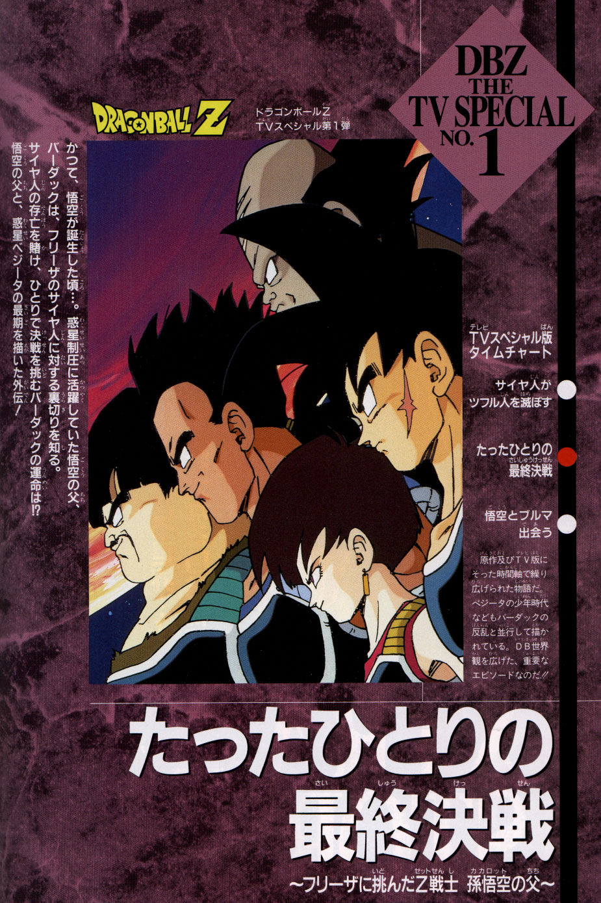

Bardock – El Padre de Goku
Bardock, un guerrero de clase baja y padre de Goku, recibe una visión profética tras una misión sangrienta: verá la destrucción del planeta Vegeta a manos de Freezer. Aislado por su propia especie y considerado un rebelde, Bardock lucha solo contra su destino y el poder aplastante del emperador galáctico.
Año: 1993
Director: Shigeyasu Yamauchi
Ver Análisis >
Director: Shigeyasu Yamauchi